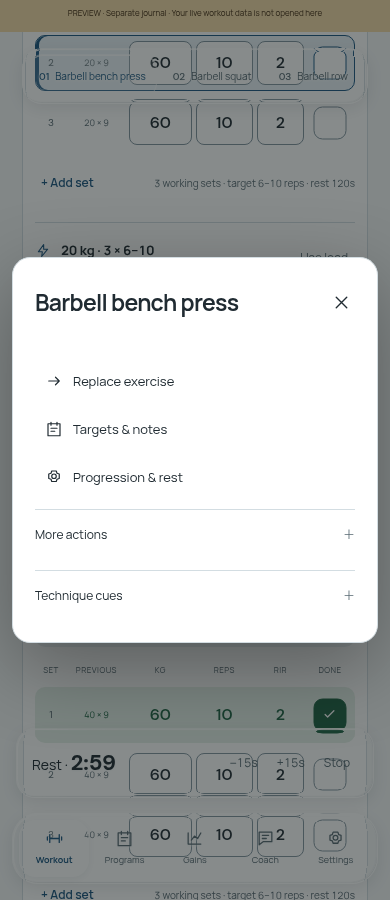

CLEAR, WITH DEPTH
Glass.
Without the frosting.
The pane stays clear and sharp. Reflections sit on the rim, with a subtle lens bend at the edges where the browser supports it. Aero’s colours, typography and layout stay the same.
MOVE THE GLASS
Look through it.
Move this pane across the pattern. The background stays crisp through its centre; the curved rim supplies the depth.
ACTUAL APP CAPTURES
The frost is gone.
The same saved workout and scroll position, comparing the previous 16px frosted material with the new clear optical finish.
YOUR WORKOUT STAYS READABLE
Clear controls.
Solid data.
Only navigation and floating controls use the glass finish. Workout cards, numeric fields and dialog content retain solid backing. Labels get a small local contrast halo.
Photo backgrounds, short screens and reduced-transparency settings retain readable solid controls.
This is a web approximation, not Apple’s native iOS material. Safari uses the clear reflective CSS finish; supported Chromium browsers also bend the backdrop at the rim. Physical iPhone rendering has not been certified.
EXERCISE OPTIONS

